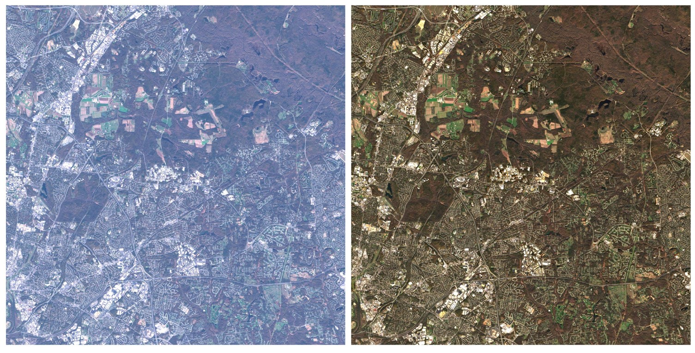
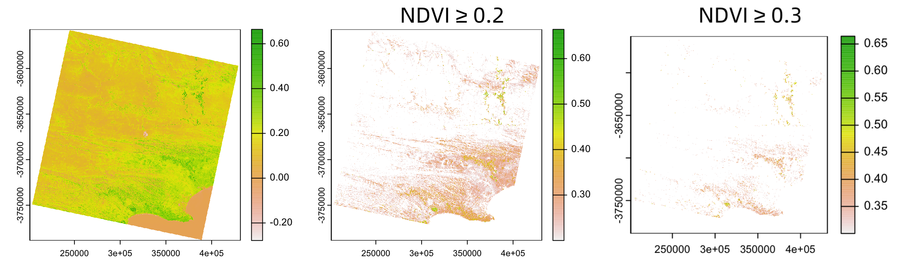
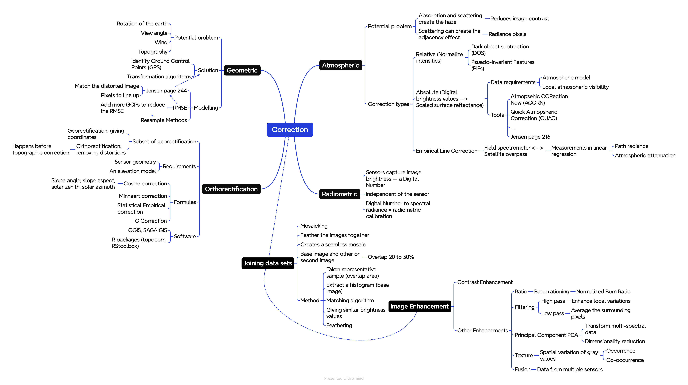
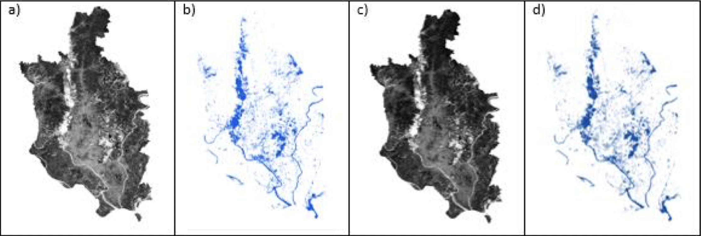

3 Week 3 Corrections
3.1 Summary
This week’s lecture primarily taught us several types of “corrections”: Geometric Correction, Atmospheric Correction, Orthorectification Correction, and Radiometric Calibration. Due to atmospheric factors, varying terrains, and weaknesses of different sensors, remote sensing images may have imperfections, making Correction essential. Different types of correction methods are utilised to address image distortions, inaccuracies, and impacts caused by various factors, to obtain images that more closely represent the actual conditions of the Earth’s surface.
Geometric Correction can rectify distortions in images caused by the sensor’s angle of view, the Earth’s rotation, and other factors. It necessitates the identification of ground control points (GPS) to match known points in the image with those in the reference dataset and then constructs a model to align the pixels.
This week’s practical session focuses primarily on Atmospheric Correction. Atmospheric scattering reduces image contrast and produces “adjacent effects.” Biophysical parameters and spectral signatures through time and space are essential for Atmospheric Correction. The practical explained the principles and formulas of Dark Object Subtraction (the darkest pixel should be 0).
Orthorectification falls under the category of georectification, aimed at eliminating distortions to ensure pixels are viewed as if from nadir.
Radiometric calibration converts Digital Numbers to spectral radiance, allowing images to reflect spectral characteristics.

In addition, I also learned about image stitching techniques and the principles behind various types of image enhancement. This week’s practical involved hands-on application of many enhancement methods. I found the ratio most interesting, as it allows us to highlight specific landscape features in an image. The image below demonstrates my use of the Normalised Difference Vegetation Index (NDVI) to observe the area I selected in the first week, covering Port Elizabeth, thereby highlighting regions with healthy vegetation. A higher NDVI value indicates more excellent vegetation cover and better growth conditions.

The image below is a mind map I created based on the knowledge acquired this week, to facilitate revision.

3.2 Applications
The application of corrections has a vast scope, aiming to better and more accurately identify targets of interest, such as in image classification. Shin, Pollard, and Muller (1997) have provided a more precise geometric correction algorithm to match coastlines. Gilmore, Saleem, and Dewan (2015) evaluated images corrected by Dark Object Subtraction (DOS), and the results showed that this method significantly improves the differentiation of wetland areas.

Of course, there is literature continuously optimizing this method. For instance, Chavez Jr (1988) pointed out the weakness of DOS, namely, that the haze values for each spectral band are selected independently and are influenced by atmospheric scattering. Therefore, the author improved the method by normalizing the predicted haze values.
Through reading the literature, I’ve found that researchers are increasingly favoring the continuous optimization of correction methods’ accuracy (after all, everyone hopes to obtain more accurate images). However, increasing accuracy might also increase computational demand (the optimization methods mentioned above all have greater model computational complexity). There is always a trade-off between accuracy and computational effort, so some simpler methods (like DOS) remain very popular.
3.3 Reflection
I feel the arrangement of this week’s lecture and practical sessions was very sensible. The lecture focused on introducing me to various corrections, while the practical allowed me to gain a deeper understanding and hands-on experience in image enhancement.
In this week’s reflection, I’d like to discuss my perceptions of Corrections specifically. Corrections are complex and sophisticated. When reading literature on the topic, encountering numerous mathematical formulas is common, making the field appear daunting at first glance. Although I enjoy mathematics, I still face many challenges when reading these documents, as the abundance of parameters can be distracting, or I might not fully grasp the derivation of formulas.
I admire the researchers who optimize or innovate correction methods, understanding that such research demands a significant time investment. My current task is to summarise and synthesize their approaches. However, I hope that through continuous learning, I can achieve a more comprehensive understanding of this field.